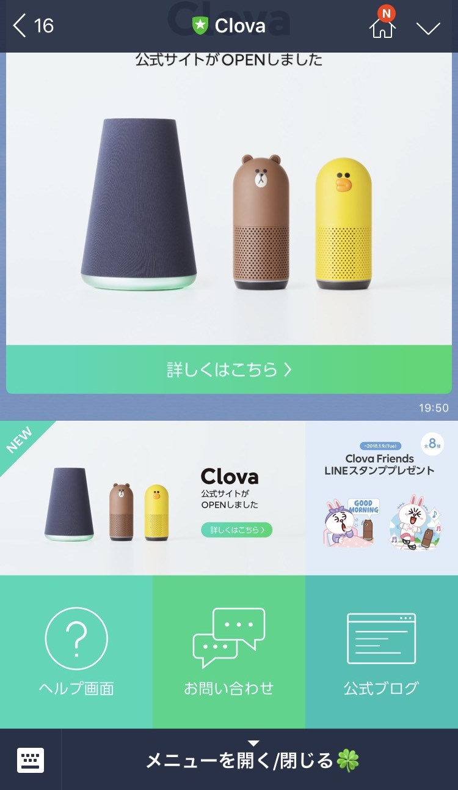
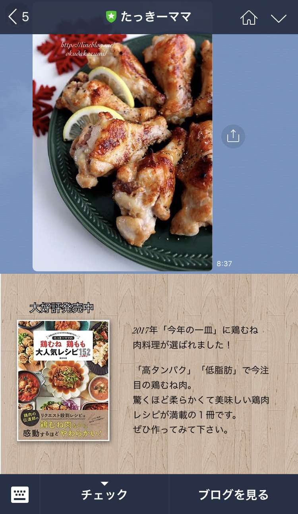
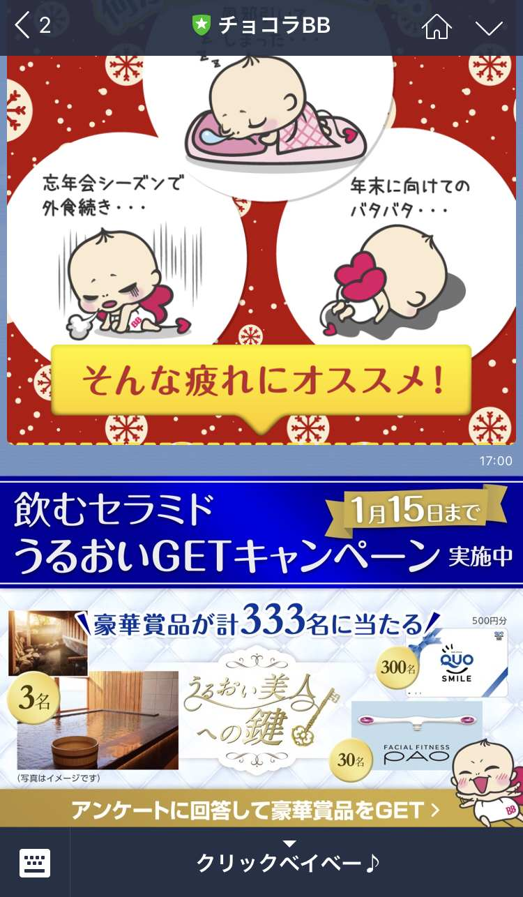
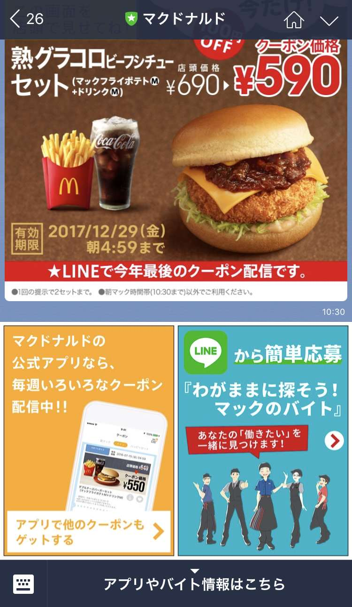
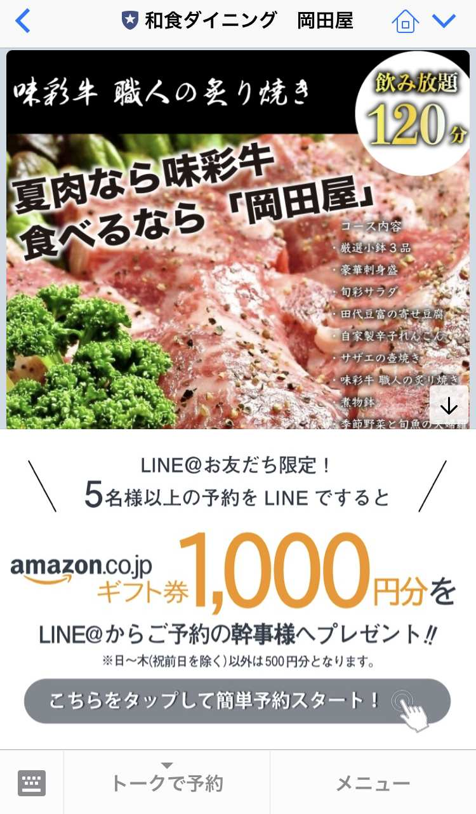
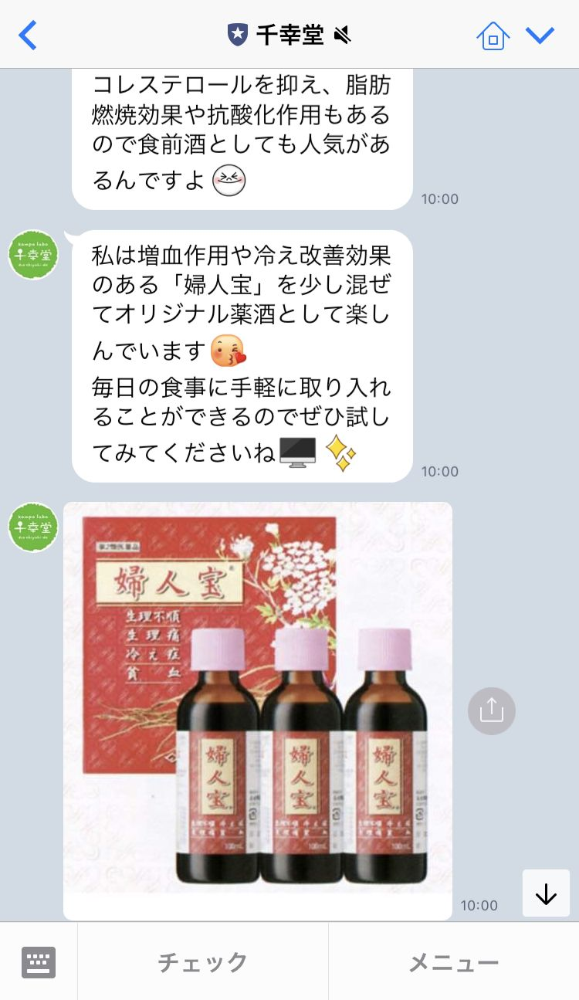
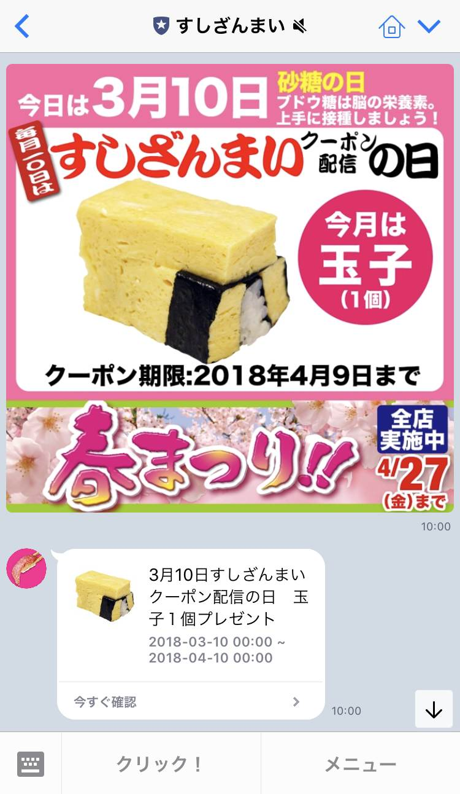
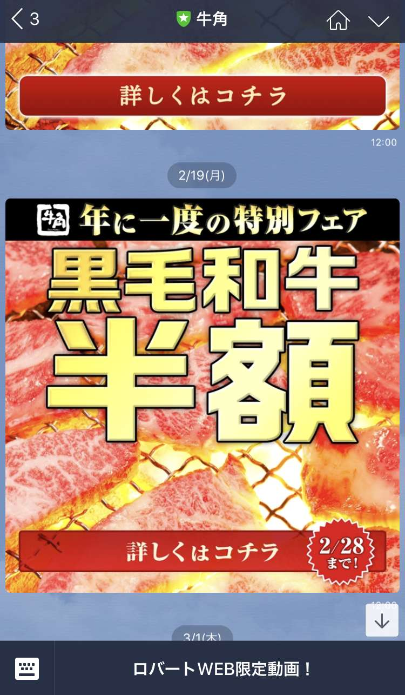

| 小さな店舗のLINE@集客の鉄則 | |
| 柴田大空 | |
| (2018) | |
あなたはあなたのお店の売り上げをどう計算していますか？私のクライアントの多くに飲食店がいます。そのような実店舗では、経営計画や売上計画で「客席×回転数×客単価＝売上」という計算式で計画を立てています。
この売上計算式が間違っているわけではありません。しかし、これでは、お客の事を無視した店舗側の考え方中心となってしまします。そして、来月は何人来店してくれるだろうか？回転率を上げると言われても来店者がいなければ...そんな悩みが毎月途絶えません。結果、この計算式は、商品第一主義の計算式であり、良いものを作れば、勝手にお客がやってくるというお客が毎日殺到する事を想定しています。
インターネットが普及し、お客は多くの情報量を得ることができるようになった昨今、今まで以上にあなたのお店を知ってもらい、気に入ってもらい、来店していただくのは厳しい時代となっています。
そのような中で、あなたのお店を着実に成長させ、売上を安定させるためにはどうすれば良いのでしょうか。
この本では、その方法を順を追ってお伝えします。
私の会社へのお問い合わせには「ＬＩＮＥ＠ をやれば売上が上がるのか？」というお問い合わせが多くあります。答えは『ＹＥＳ』です。しかし、ＬＩＮＥ＠ というツールを手に入れただけでは売上は上がりません。
現在、ＬＩＮＥ＠
は30
万以上のアカウントが開設されています。
その全てのアカウントが成果を出しているでしょうか？答えは『ＮＯ』です。中には作っただけで全く稼働していないアカウントもあります。
ではどうやれば成果が出せるのか？
それには３つの要素についてお伝えする必要があります。
① マインドセット 、 ② ツールセット 、 ③ スキルセット（スティーブン・Rコヴィー・７つの習慣より）
この３つの要素を全て理解したうえで運用することです。
まずは、この①
目のマインドセットについて、この章でお伝えしたいと思います。
ここのマインドセットを理解していない店舗が多くあります。流行りだから。みんながやっているから。そのような理由で、正しいマインドセットを持たずに始めてしまうと、開設後、２、３週間で放置し、効果の出ないまま辞めてしまうという事につながってしまいます。
正しいマインドセットを理解し、ツールを理解し、スキルを磨き、着実に安定して成長する店舗へと向かっていきましょう。
このマインドセットで理解すべき一番最初の考え方は、売上の計算式です。
私の考える計算式をお伝えします。これは私のやっているマーケティング会社でも、飲食店でも同じ計算式で活用しています。
「リード×コンバージョン率×ライフタイムバリュー(ＬＴＶ)」
です。
マーケティングの世界やインターネットの業界では当たり前の考え方ですが、これは小さな店舗にとっても重要な考え方です。
ここで少しこの言葉について解説しておきます。
リードとは、「見込み客や既存顧客」です。コンバージョン率は、「成約率」、そして重要なのがライフタイムバリュー（ＬＴＶ）＝「顧客生涯価値」です。
ＬＴＶ(顧客生涯価値）とは、お客があなたのお店に生涯いくら使ってくれるのかということです。
生涯というと難しく感じるかもしれませんが、１年間隔で考えてみましょう。
１人のお客様が、月に１度来店していただけると考えた時、年間で12 回来店していただけます。1年間のＬＴＶは12 ×４，０００（客単価）で４８，０００円となります。
今までの計算式と大きく違う点がＬＴＶの考え方です。要は１年間で何回リピートしていただけるかを考えるという事です。
ここまで、売上の計算式に対する考え方をお伝えしてきました。ここですでにお気づきかもしれませんが、売上を上げ続け継続して成長するためには、リピート率を上げ、ＬＴＶを最大化する事が重要です。
特に小さな店舗やオープンしたばかりの店舗は、大手企業と違い、アプローチするリードも少ないでしょう。
しかし、そのような店舗だからこその強みがあります。それはお客との距離が近い事です。大手企業のような、安売りのキャンペーンや、プレゼントキャンペーンなどでお客との関係性を築くのではなく、家族や親戚、友人のような関係性を築くことで少ないリードでも大手には真似のできない最大限の効果を得ることができます。
それを積み重ねることによって、徐々にリードも増え、ＬＴＶも最大化していきます。
さて、ここまで、ＬＩＮＥ＠ を活用し売り上げを上げるためのマインドセットについてお伝えしてきましたが、ここで少しツールセットについてお伝えしたいと思います。詳しくは、第２章でお伝えいたしますが、ここではマインドセットをさらに深く理解していくためにＬＩＮＥ＠ というツールの概要をお伝えします。
まず、ＬＩＮＥ＠
というツールを理解する上で欠かせないのがＯ２Ｏプロモーションです。
Ｏ２Ｏとはオンライン（インターネット）とオフライン（実店舗）を結びつけ、消費者の「来店促進」と「購買の拡大」など、商品やサービスの利用を促すこと（Ｏｎｌｉｎｅ ｔｏ Ｏｆｆｌｉｎｅ オンラインからオフラインへ）です。
現在は、スマートフォンが急速に拡大し、インターネットで事前に店舗や商品を調べて来店することが主流になっています。また実店舗に来店した時には何を買うかをすでに決めている人が70 ％ を超えます。そして、さらに実店舗での体験からオンライン（ネットショップなど）で商品を購入することも増えています。（オフラインからオンライン）
結果、うちは実店舗（オフライン）だからオンラインは関係ないと言える時代ではなくなってしまったのです。
Ｏ２Ｏについてお伝えしたところで、なぜＯ２ＯにＬＩＮＥ＠ が最強のツールなのかをお伝えしていきたいと思います。現在スマートフォンの普及により多くのスマートフォンアプリケーションが存在しています。多くのスマートフォンユーザは様々なアプリケーションをインストルして使うため、独自で開発したアプリケーションをインストールしてもらい、情報を届けるというのが一般的に広がりました。しかし、アプリケーションの数が増えるにつれ、ユーザーは日常的に頻繁に利用するアプリケーションと、たまにクーポンなどを取得するためだけに使うアプリケーションを分けるようになり、クーポン等を取得するためだけのアプリケーションは次々と入れ替えられてしまうようになっています。結果、独自アプリケーションはユーザーに他のアプリケーションと入れ替えられないようにする努力が必要となってしまっています。
それでは、ＬＩＮＥというアプリケーションを見てみましょう。ＬＩＮＥを活用している国内のユーザーは７０００万人を超え、国内の生活インフラとなっています。要は、日常的に頻繁に使うアプリケーションとなっているという事です。店舗はＬＩＮＥを活用する事で、先ほどお伝えした他のアプリケーションと入れ替えられないようにする努力が必要なくなります。しかし、ＬＩＮＥは、個人のアカウントで成り立っており、ＬＩＮＥ利用規約にて商用利用は禁止されています。最悪の場合、個人のアカウントが利用停止になってしまう事もあります。そこで作られたのが、店舗や企業向けのアカウントであるＬＩＮＥ＠ です。店舗や企業がＬＩＮＥの７０００万人以上のユーザーに情報を届けるためにはＬＩＮＥ＠ が必須という事です。
ＬＩＮＥ＠ は個人アカウントと同様に、プッシュ通知にて情報を届けることができます。（アプリケーションを起動していなくてもスマートフォンに情報が届く仕組みです）普段使いのアプリケーションのＬＩＮＥだからこそ、その効果は絶大です。店舗や企業からの情報伝達手段として主流であったメルマガと比較すると、送った情報を見ていただける確率（開封率）は５倍以上となっています。これはメルマガの全盛期と比べての数字です。また、届けた情報に対して、ユーザーが反応してくれる率（クリック率）は20 倍以上となっています。お客にリアルタイムで情報が届けられて、且つ反応を取れるツールでなければＯ２Ｏプロモーションは上手くいきません。これが、Ｏ２ＯでＬＩＮＥが最強のツールであると言える理由です。
少し、ＬＩＮＥのツールについてお伝えしたところで、またマインドセットについて話を戻していきたいと思います。またマインドセットかと思われるかもしれませんが、ＬＩＮＥ＠
で成果を出すためには今からお伝えするマインドが最も重要となります。なので、このマインドについての項目は飛ばさずに、何度も何度も読み直し、しっかりと理解してください。
それでは、最も重要なマインドについてお伝えしていきます。
ＬＩＮＥ＠
というツールがＯ２Ｏで最強だという事は理解できたかと思いますが、それではＬＩＮＥ＠
でどのような情報をメインに配信するのが良いのでしょうか。
私の会社で飲食店オーナーにアンケートをとった結果、１位は割引情報、２位は役に立つ情報となりました。この結果をどう思うでしょうか？僕も、私もそう思うと思った方も多いと思います。
これは本当に多くの店舗がやってしまう間違いです。なぜこれが間違いなのか。それはまずＬＩＮＥというツールの特性です。ＬＩＮＥは普段個人対個人のコミュニケーションの手段としてのインフラです。その中に店舗や企業のアカウントが入るという事は、店舗と個人（お客）とのコミュニケーションの手段としなければ、ユーザーは簡単にアカウントをブロックし関係性を切ってしまいます。
ＬＩＮＥはメルマガのように解除用のＵＲＬからクリックし解除フォームにてアンケートに答え解除ボタンを押すというような面倒な手続きは不要で、簡単にブロックすることができます。ＬＩＮＥ＠
は一度友だちになると、ブロックをしても友だち数の表記は減る事はありません。なので、友だち数３，０００人や１０，０００人と表記されているところでも実際にはほとんどがブロックされており、本当に情報を届けることができるお客は１００人〜５００人なんて事が当たり前のように起こっています。では、そうならない為に店舗はどのようなコミュニケーションをお客と取れば良いのでしょうか。コミュニケーションなので、このマインドが絶対です。『ＬＩＮＥ＠
は売り込みのツールではない』ということ。
ちょっと待ってください！最初にＬＩＮＥ＠
で売上は上がるという話だったのに、売り込まないとはどういう事ですか！？という声が上がってきそうです。どのようなマインドを持てば、売り込まないのに売上が上がるのか。その答えは単純です。
ＬＩＮＥはソーシャルメディアです。なので、『ＬＩＮＥ＠
＝メディア』というマインドを持つ事です。
メディアといえば、代表的なものはテレビがあります。テレビというメディアは何のために番組を放送しているのでしょうか。また、番組制作側はどの数字を気にしているでしょうか。
テレビ番組は視聴者を楽しませる為に作られています。決して物を売るためではありません。そして気にしている数字は視聴率です。これもどれくらいの視聴者が楽しんでみてくれているかです。
では、テレビはどこで売上を上げているでしょうか。これはコマーシャル（ＣＭ）です。ここまでお伝えするとＬＩＮＥ＠
をどう運営していけば売上が上がるのかが分かってくると思います。
ＬＩＮＥ＠
もテレビと同じくメディアです。ＬＩＮＥ＠
の友だち（お客）へ興味を持ってくれそうな企画で番組を作り、それを定期的に配信し、その中でコマーシャルを配信し、売上につなげるという流れになります。コマーシャルが多いとブロックされます。このバランスがとても重要になるという事を理解しましょう。
『ＬＩＮＥ＠
＝メディア』であり、売上は『ＣＭ』を流すという事をお伝えいたしました。メディアなのでもちろん視聴者数が多ければ多いほど、コマーシャルの効果は高くなりますが、ＬＩＮＥ＠
のような個人でも使えるようなメディア（ソーシャルメディア）では、最初から多くの視聴者を獲得する事は難しいです。しかし、ソーシャルメディアには「シェア」という口コミ機能があります。もちろんＬＩＮＥ＠
にもあります。まずは、少ない友だち数でもきちんと視聴者（友だち）との関係を築くような番組を提供し、楽しんでいただければ、シェアされ、徐々に友だち数も増えてきます。自分の番組を楽しみにしてくれている視聴者（友だち）が多くなるにつれ、都度適切なタイミングでコマーシャルを流す事で安定した売上を上げる事が可能となります。また、メディアを運営するという事は、コマーシャルを流すタイミングを自由に設定できるようになるという事です。それは、売上をコントロールできるようになるという事です。
現在は、インターネットにより情報量が爆発している時代です。その情報量に自分の情報が埋もれないように多くの企業が大金を使い、努力しています。その中で1人で運営している店舗でも成長させていく為には、確実に情報を届けられるＬＩＮＥ＠
を活用し、Ｏ２Ｏプロモーションをうまく展開していく必要があります。
まずは、小さなメディアを運用し、そのメディアを成長させていきましょう。
それでは、ここからはツールセットについてお伝えさせていただきます。
ＬＩＮＥ＠
は様々な機能があります。初期設定にもそれなりに時間が取られてしまうでしょう。
しかし、全ての機能を理解し、全ての設定をしないといけないという訳ではありません。むしろ、設定に入る前の準備の方が大切です。
よくある間違いとしては、何も準備をせずに、自身でわかる部分だけを設定し始めてしまうことです。それでは、何を目的にＬＩＮＥ＠
を活用していけば良いのか明確になっていないため、どのような友だちを集めるのか、どのような配信内容にするのかを決めることが難しくなります。
まずは、ツールを理解し、そのツールのどの機能を活用すれば、自身の目標を達成できるのかを理解できるようにしていきましょう。これから５つのステップで、その内容をお伝えしていきます。
時間がないから、面倒だから、何と無く経験則からわかるからという理由で各ステップを飛ばさずに、１つ１つステップを進めてください。また、運用していく中で悩んだときは、最初のステップから見直して、正しくＬＩＮＥ＠
というツールを活用していくようにしましょう。
ＬＩＮＥ＠
の運用を始めるにあたり、一番最初にやらなければいけないのは目標設定です。このステップを飛ばしてしまうとツールに振り回されることになります。ＬＩＮＥ＠
は一言で言ってしまえば、「メッセージ配信ツール」です。このツールを何のために使うのかを明確にし、目標設定を行っていきます。
「あなたは何のためにＬＩＮＥ＠
を使いますか？」
少し、時間をかけてでも考えてみましょう。
多くの方の答えが「売上をあげるためにＬＩＮＥ＠
を使う」と考えられたと思います。もちろんそれで構いません。第１章のマインドセットを理解された方であれば、もう少し具体的な目標になっているかと思います。
「既存の顧客や見込み客とコミュニケーションをとり、売上をコントロールする為にＬＩＮＥ＠
を使う」となっているのではないでしょうか。
それでは、目的が明確になったところで、目標を設定していきたいと思います。設定していただきたい目標は、メッセージを届けることができる既存の顧客や見込み客の数、要は「リード数」です。売上はコントロールできるので、ＬＩＮＥ＠
での売上目標〇〇円というのは無意味な目標です。重要なのは、メッセージを届けることができる数となります。ＬＩＮＥ＠
で言うと、「有効友だち数（友だち数－
ブロック数）」です。
「何人ぐらいの友だち数がいれば良いのですか？」というご質問を受けることがあります。これは、店舗と友だちとの関係性によって変わりますので、一概に何人という定義は難しいというのが答えになります。
なので、ＬＩＮＥ＠
を運用していきながら、コマーシャルに対するコンバージョン率から再検討していく事が重要となります。まずは、ご自身が何人の友だちを作りたいかを考え、設定してください。
ここで注意すべきことが１点あります。数字の目標を立てるとその数字を達成させることに目が向いてしまいます。数は集まっても、コミュニケーションを取れるユーザーでなければ意味がありません。
友だち数の目標を設定したら、次にやっていただきたいのが、ペルソナの設定です。
ペルソナとは「お店が提供する製品・サービスにとって、もっとも重要で象徴的なユーザーモデル」です。少し難しい言葉に聞こえるかもしれませんが、要は「あなたの店にきてほしい人」と考えてください。
お金さえ払ってくれれば、お客は誰でも良いと思っているオーナーはほとんどいません。自分のお店にきてほしい優良なお客は誰か、お店のファンになって応援してもらいたいお客は誰かを考えましょう。
ペルソナは架空のお客像でも、実際に存在するお客でも構いません。ペルソナは具体的であればあるほど良いです。
その理由は、配信していく番組（コンテンツ）を作る際に不特定多数に対して作ろうとするより、具体的な一人に対して作る方が簡単で、効果的だからです。お客が私のことだ。私のための内容だと認識する番組（コンテンツ）の方が、より深いコミュニケーションを取ることができ、視聴率はあがるということです。
友だち数の目標を設定した後は、ペルソナシート を作成し、それに近い人を友だちに集めることでＬＩＮＥ＠ を効果的に活用していく準備ができます。
ステップ２は具体的な設定方法です。ただし、初期設定には時間をかけないということが大切です。ホームページ等でもよくありますが、最初にかなりの時間をかけてこだわりにこだわって、作り込みをすると、それだけで満足してしまう方が多くいます。
ＬＩＮＥ＠
も例外ではありません。ＬＩＮＥ＠
には多くの設定項目がありますが、スタート時は時間をかけずに、最低限の設定を行いスタートする事に重点をおくようにしましょう。もちろん、全てを設定することが悪い事ではありません。スタート後、時間や気持ちに余裕のある時に設定すれば良いという事です。
それでは初期設定をやりましょう。準備していただくものは画像を３枚です。
「えっ！？それだけ？」と思われた方も多いと思います。ただこれは、あくまでスタート時点はこれだけで良いという事です。運用していく中で、細かく設定をしていきましょう。
1つ目の画像は、プロフィール写真です。サイズは６４０ｐｘ × ６４０ｐｘとなります。重要なのは、正方形で、円形に対応できる画像という事です。この画像はＬＩＮＥのトークルームにも表示される画像になるので、あなたのお店だと一目でわかるものを設定しましょう。
そして次の画像は、カバー画像です。この個の画像は、１０８０ｐｘ × ８７８ｐｘが推奨サイズとされています。横長の長方形を準備しましょう。
ここでのポイントは、ユーザーが「このアカウントはあなたのお店かな？」と確認しようと思ったときに表示される画像となりますので、「このお店で間違いない！」と理解できる画像を準備する事です。例としては、地域がわかる背景を含んだ画像や、入口の画像です。ユーザーがあなたの店舗でいつも見ている風景の画像を準備すると良いです。
そして最後の画像です。これは友だち追加時に送る「初回メッセージ」と一緒に送る画像となります。この画像は、これからどんな番組が始まるかを案内する画像となります。テレビ番組でいうと番組紹介に使われている画像のようなものです。
イメージがつきにくい方はインターネットで、自身の好きな番組を検索してみてください。必ず出演者が並んで●日●時から放送開始等の画像が出てくると思います。ＬＩＮＥ＠
も１つのメディアで、番組（コンテンツ）を配信していくということはお伝えしたと思います。
なので友だち追加時にどんな番組がこれから配信されるのかをユーザーにお伝えしなければなりません。もし配信する番組が決まってない場合（ステップ４で番組の作り方はお伝えします）は、誰が配信するのかという事だけでもわかる画像を準備しましょう。
画像の準備ができた後は、友だち追加時に送る「初回メッセージ」の準備です。初回メッセージは一緒に送る画像の説明です。要は番組の詳細です。今後配信するメッセージがどのようなものなのか、誰が出演するのかを書きましょう。
テレビ番組で言うイントロダクションです。ここで注意して欲しいのは、文章が長くなりすぎないようにする事です。ＬＩＮＥの特徴として短文やスタンプなどでハイコンテクスト（あうんの呼吸が通用するやりとり）なやりとりでコミュニケーションをする事です。
初回メッセージが長すぎるとそれだけで、ユーザーからブロックされてしまう事になりかねません。「●●が▲
▲
をお届けします！」「▲
▲
なものを毎週水曜日に●●が配信します」など、50
文字以内に収めるようにしましょう。
そして最後の準備するものは、「友だち追加時のオファー（特典）」です。これはなくても良いのですが、準備すると友だち追加が促進されたり、運用後にブロックされる率を軽減する事ができます。可能であれば設定しましょう。
オファー（特典）の例としては、割引クーポンやプレゼントなどになりますが、ＬＩＮＥ＠
の機能を活用し、「抽選クーポン」でエンターテイメント性を高めたり、アンケートを記入してもらうなど、ユーザーを巻き込むものにすると更に効果的となります。
・ステップ３「ＬＩＮＥ＠
の友だちを１００人獲得」
次に、友だち追加をしてもらうための準備です。どんなに良い番組を作っても、どんなに多くのメッセージを送っても、友だちがいなければ何の効果も得る事ができません。
しかし、小さな店舗で何万人、何千人の友だちを作らなくても効果を得ることはできます。私のクライアントへはまずは小学校に入学した時のように「友だち１００人作りましょう」とお話しさせていただいています。
友だち１００人の作り方は、とてもシンプルで簡単です。思い出してください。小学校に入学した時、もちろん最初から友だちがいたわけではありませんよね。
そして、いきなり「友だちになってよ」とむやみやたらと声をかける事はしていませんよね（中にはいるかもしれませんが）。
大抵の場合（特に大人になってからは）、何度か話をして、「この人とは仲良くなれそう」と思って連絡先を交換したり、何気ない話の中からイベントに誘ってみたりしていつの間にか仲良くなったという事が多いのではないでしょうか。
ＬＩＮＥ＠
の友だち獲得も同じです。来店していただいたお客に何気なく話かけたり、何度か来てくれたお客に「以前も●日に来ていただきましたよね？いつもありがとうございます」などと何気なく会話してみて、この人とは友だちになれそうだなと思った人に対して「よかったらＬＩＮＥ＠
に友だち追加していただけませんか？」と話かけることで友だちを獲得していく事になります。
誰もがわかっている通り、友だち追加時のオファー（特典）だけで追加していただいた人は、今後メッセージを送ったときにブロックされてしまいます。友だちはお金や物では手に入れる事はできないのです。
「そんな事言われても、作業もあるのに全員に声をかけてなんかいられないよ」
と思われますよね。
その通りです。飲食店であれば、調理、配膳、会計など多くの業務があります。よほど暇な時でなければ、お客とゆっくり会話することなどできません。
ただ、本来であれば、友だちとはそういうものだという事を理解して欲しいというのが私の意見です。それを理解した上で、友だちを獲得するツールを活用してください。
では、友だちを獲得するためのツールについてお話しいたします。１つ目は、友だち獲得のＰＯＰです。ＰＯＰはあなたの代わりにお客に話かけてくれるツールです。
よく「ＬＩＮＥ＠
はじめました」と記載され、ＱＲコードだけが載っているＰＯＰを見かけます。大手の企業で、多くのプロモーションを展開されているような店舗であればこのＰＯＰでも良いのですが、小さな店舗はこのＰＯＰでは友だちは集まりません。
本来、あなたが話しかけコミュニケーションをとり、自然と友だちになるものだとお伝えしました。ＰＯＰはこの役割をあなたの代わりにやってもらうためのツールです。
あなたのことを伝え、あなたのことを理解してもらい、そして、お客に問いかけるようなチラシを作成する事が重要です。
また、オファー（特典）を準備された人はお近づきの印としてプレゼントするものだと伝えましょう。ＰＯＰはＰＣ、手書きのどちらで作っても構いませんが、格好が良いもの、目立つオファー（特典）で惹きつけるものというよりも、きちんとあなたの伝えたい事が伝えられるものになっているかということを重要視してください。
２つ目のツールはインターネットを活用したチラシ（ランディングページ）です。
このツールもＰＯＰと同じです。注意していただきたいのはあなたが伝えたい事が伝えられるものになっているかという事です。
インターネットを活用した場合、リアルに店舗にこられているタイミングでみることが前提ではないので多少の装飾や魅力部分の打ち出しは必要となります。
また、インターネット上で見つけてもらう為のテクニックや広告も必要となるでしょう。この本では作り方や広告については触れませんが、簡単にツールをご紹介します。
【ランディングページ作成ツール】
ｗｉｘ
ペライチ
ＷｏｒｄＰｒｅｓｓ
今では誰でも簡単に、そして無料でランディングページを作れるようになりました。余裕のある方は是非作成してみてください。もちろん作成したからと言って友だちが自動的に増えるわけではありません。ＦａｃｅＢｏｏｋ広告やＰＰＣ広告などで告知し、多くの人にみてもらう為の努力は必要です。
ＰＯＰもランディングページも一度作れば、終わりではありません。人と会話する時に同じ話しかしない方はいませんよね。飽きられないように定期的に作り直し、多方面からお客に話かける事が大切です。
・ステップ４「ＬＩＮＥ＠
をブロックされないコンテンツ作り」
ステップ４は配信する番組（コンテンツ）作りです。今までのステップで準備はできたと思いますが、何度もお伝えしますが、一番重要なのは番組（コンテンツ）です。一言で言ってしまえば、コンテンツが良ければＬＩＮＥ＠
は成功します。
では、どのようなコンテンツを配信していけば良いのでしょうか。
この悩みがＬＩＮＥ＠
を運用していく上で一番多いでしょう。結果からお伝えするとコンテンツはアイディア勝負です。
ユーザーが驚くようなコンテンツ、初めて聞くようなコンテンツ、ユーザーを巻き込むようなコンテンツなど常にアイディア勝負で、コンテンツを作り続けなければいけません。
しかし、日々の多忙な業務の中、そんなに多くのコンテンツを生成していく事は、小さな店舗では特に難しいと感じるでしょう。はっきりと言って無理ですよね。
なので、このステップでは小さな店舗の鉄板コンテンツで、かつ、簡単にコンテンツを作ることができる方法をお伝えしたいと思います。
私の会社では多くのクライアントのアカウントを運用していますし、コンテンツ制作の依頼も受けています。
しかし、コンテンツ生成のチームはわずか２人です。そのチームで活用している鉄板コンテンツと作り方です。
アイディアに自信がない方やアイディアが切れた時、またそもそもコンテンツに時間をかける余裕がない方は真似していただけると簡単に大量のコンテンツを作ることができます。
コンテンツの内容はシンプルです。ＬＩＮＥはＳＮＳの１つなので、ＴｗｉｔｔｅｒやＩｎｓｔａｇｒａｍ、Ｆａｃｅｂｏｏｋと同じように、過去の出来事や将来起こるであろう出来事をシェアし、お店や自身の意見を追加するというコンテンツです。
テレビ番組でいうと、ニュースに対してコメンテーターが意見を言い合うような番組（コンテンツ）になります。
では、実際にコンテンツ作りをやってみましょう。
まずはコメンテーターを決めましょう。コメンテーターはあなた、もしくはスタッフでも、全く別の第三者でも構いません。
そして、コメントするためのニュースを決めていきます。ニュースはあなたのお店やあなた自身のニュースにします。お店では毎日、様々なことが起こっています。同じルーティーンをやっているだけと考えてしまいがちですが、昨日と同じ日は絶対にないのです。
小さな変化に気づかなかいのは意識していないか忘れているだけです。昨日の自分を振り返り、昨日のちょっといつもと違った出来事や、ちょっと感じた事、気づきを思い出してみましょう。
「そんな事を言われても、思いつかないよ」そう言われる方も多いと思います。そんな時に役に立つツールが、「ブレストカード」です。
これは、通常アイディアを大量に出すために使うものですが、私たちはこれを思い出しの発掘に活用しています。ブレストカードは市販で売られているものを活用しても良いですし、ご自身で作られても良いです。
ブレストカードとは、カードの裏に単語や、イラストなどが書かれたカードです。
ご自身で作られる場合は、カードの裏にはできるだけ常日頃行っている日課業務や生活に関わる事を単語やイラストで書くようにしてください。
そしてカードを１枚ひき、その事柄について過去の経験を思い出すようにしてください。１つの事柄に焦点を絞る事で、過去の出来事のちょっとしたニュースやエピソードを思い出すことができるはずです。
少し例を見てみましょう。
【ブレストカード】睡眠
【出来事】昨日はお客と一緒に飲んでしまって、今日は寝不足だ
【コメント】私はお客と一緒に飲めるお店は素敵だと思う。お客と同じ空間で同じ雰囲気を感じることができるのはオーナーとして幸せだからだ。
この場合、睡眠というキーワードから、昨日飲みすぎたという出来事を思い出しています。そしてポイントとなるのが、「今日は寝不足だ」という事です。ＬＩＮＥはプッシュ通知で届けることができる「リアルタイムメッセージ」です。なので、過去の出来事から今につなげているという事に意識してください。
そして、それに対する自身のコメントを追加します。あとは、これを1つの文章にするだけです。この例の場合は、次のような文章になります。
【あなたの幸せな時間をおすそ分けしてください！こんにちは、●●です。昨日は、[お店の名前]によくきていただけるお客様から、「大将！一緒に１杯どう？」とお誘いいただき、お酒をいただきました。お客様と一緒の空間で時間を過ごすことができる事が、私の１番の幸せです。お店をやってよかったなと思う瞬間です。お店に来た際は、是非お声かけください。声をかけてくれるだけで嬉しいです。照れ屋な私ですが、内心すごく喜んでいますので。Ｐｓ.１杯どころか朝方まで飲んでしまい...寝不足ですが、今日も元気に営業しています！】
いかがでしょうか。簡単にコンテンツを作成することができました。
このようなコンテンツは簡単でありながら高い効果を得られます。理由は1章でもお伝えしてきた通り、ＬＩＮＥを理解し、コミュニケーションに特化しているからです。このコンテンツ作りで注意すべきは、何度も言いますが、セールスはNGということです。
・ステップ５「配信後の結果を分析する」
それでは、最後のステップです。
このステップを行うことで、配信するメッセージの質を上げていくことができます。ＬＩＮＥ＠
を初めて、最初に送った配信メッセージを今後配信するメッセージの中で一番下手なメッセージです。最初から良いメッセージを作れることはありません。ＬＩＮＥは運用していく事で、お客とのコミュニケーションが深まり効果を発揮することができるツールです。
メッセージに対して、お客はどう感じているのか、友人に対して考えるように考えましょう。そして、配信しっぱなしになることがないようにしましょう。
ＬＩＮＥ＠
というツールは通常の文章では、開封率を測ることはできません。なので、ＰＳ文章にブログやＨＰなどのＵＲＬを差し込み、「ｇｏｏｇｌｅアナリティクス」などで計測するようにしてください。
そして、友だちがどのコンテンツに反応しているかを理解し、次のコンテンツアイディアにしていくことでより開封率をあげることができます。また、コンテンツと同時にクーポン等を送ることで、表示ユーザー数や使用数を測ることができます。独りよがりのコンテンツにならないよう常に改善していくことが必要です。
その結果、高い広告費をかけて集客を依頼せずに安定してお客を集客できるようになり、売上を１．５倍にする事ができるようになります。
ここからはスキルセットのお話を中心にお伝えしていきます。
ただ、スキルは運用していく中で、身につけるものであり、これをマネしていれば良いわけではありません。少しでもユーザーの反応が違うなと思う部分があれば、すぐに修正することが重要です。
直接ユーザーの反応みながら運用し、自分オリジナルのスキルを身につけていくことがオススメです。今は使えるスキルであっても、ユーザーの感情や、環境が変われば使えなくスキルも多くあります。
ここで紹介するスキルは、あなたのオリジナルスキルを習得するためのキッカケ、もしくは、行き詰まった時のサポートスキルとして活用していただけるようにお伝えするものだと理解してください。また、あくまで、マインドセット、ツールセットを理解した上で活用することが重要です。
それでは、私のクライアントで、ちょっとしたスキルを使った事で、成果が出たものをお伝えしていきます。
ＬＩＮＥ＠
でお客（ユーザー）とコミュニケーションをとり、深い関係性を気づいている場合、小さな工夫で劇的に変化します。
・その１ 友だち獲得率を劇的にあげる小技
友だちを１００人獲得するためのマインドセットやツールについてはお伝えしました。このスキルはその友だち獲得を劇的に加速させる方法についてです。
【小技１】ＬＩＮＥのキャラクターと一緒にＰＯＰを配置する
ＰＯＰはあなたの代わりにお客へ話かけてくれるものにすべきだとお伝えさせていただきました。
これを補足するものとして、キャラクターを一緒に配置すると友だちの獲得が大きく伸びます。キャラクターの力は強力です。
キャラクターには、人間の目をとめ、心を動かし、感動を呼び起こす「キャラクター力」があると言われています。
あなたの店舗にオリジナルのキャラクターが存在するのであれば、それを利用し、友だち獲得に活用してください。
また、オリジナルのキャラクターを持っていない店舗は、ＬＩＮＥのキャラクターを利用しましょう。
ＬＩＮＥのキャラクターはＬＩＮＥスタンプ機能のリリースとともに誕生し、以来、ブラウン・コニー・ムーンなどそれぞれ特徴ある個性豊かなキャラクター性が支持され、ＬＩＮＥ上のコミュニケーションにおいて多くのユーザーに利用されていて、今では知らない方はいないでしょう。
ただし、ＬＩＮＥの公式キャラクターをＰＯＰ等に勝手に利用することは、ライセンス上、もちろんできません。ポイントとしては、ぬいぐるみ等のグッズをＬＩＮＥショップ
で購入し活用することです。
【小技２】ＬＩＮＥショップカードを利用する
ＬＩＮＥ＠
にはショップカードを作成することができる機能があります。今までもポイントカードの付与は多くの店舗で実施されてきたと思います。この効果は、変わらずに有効です。
そして、ＬＩＮＥというアプリケーションは1章でお伝えした通り、多くのユーザーの日常的に使うアプリケーションのため、削除されることはありません。
結果、ポイントカードを紛失した、忘れたなどの問題はなくなり、ポイントカードの作成にかかるコストも削減できるといったメリットがあります。
【小技３】他のＳＮＳを活用する
現在多くの店舗がＦａｃｅｂｏｏｋ、Ｉｎｓｔａｇｒａｍ、Ｔｗｉｔｔｅｒ等を活用し、プロモーション活動を行っていると思います。
他のＳＮＳにてすでにあなたのアカウントをフォローしてくれているユーザーに対して、アプローチするとＬＩＮＥ＠
の友だちを獲得する事ができます。
他のＳＮＳからの誘導にはＬＩＮＥ＠
の友だち追加ＵＲＬを活用しましょう。
また、私のクライアントの中には、インスタ映えスポットやインスタ映え料理を準備し、同時にＬＩＮＥ＠
の友だちを誘導するといった他のＳＮＳとの連動企画をやっている所もあります。
ユーザーにＳＮＳを活用してユーザー参加型のプロモーションを行う際は、同時にＬＩＮＥ＠
の案内をすると相乗効果を得ることができます。
・その２効果的なメッセージを確実に届ける小技
ここでは効果的なメッセージについてお話いたします。
要は、番組（コンテンツ）ではなくコマーシャル部分についてのお話になります。ユーザーと深いコミュニケーションをとることができている上で、ＬＩＮＥの特性を活かしたコマーシャルを打つことで大きな成果をあげることができます。それでは、小さなテクニックの前に、コマーシャルの種類についてお伝えしていきます。
ＬＩＮＥ＠
で効果的なコマーシャルには２種類あります。【設置型コマーシャル】と【トーク型コマーシャル】です。まずは【設置型コマーシャル】についてお伝えしていきたいと思います。
【設置型コマーシャル】とは、ＬＩＮＥ＠
のリッチメニューを活用したコマーシャルです（リッチメニューはベーシックプランから利用可）。
リッチメニューはトーク画面のおよそ３分の１を占めており、トークを開くと常に表示されるのでユーザーの目に止まりやすいコマーシャルになります。
リッチメニューはコマーシャル画像の表示だけで活用することもできますし、ＵＲＬリンクを設置し、指定のページへ誘導することもできます。
また、最大６つに分割することができるので、複合的なコマーシャルとしても活用できます。この設置型コマーシャルは長期的なキャンペーンのコマーシャルやブランドの認知アップコマーシャル、潜在的なアプローチのコマーシャルに向いています。お店の予約に誘導するといったアクションを常に表示させておくといった利用法でも効果があります。
そして、次に【トーク型コマーシャル】です。【トーク型コマーシャル】とは、配信するメッセージと同じように配信型のコマーシャルです。
テキストのみのコマーシャルや、クーポンを活用したコマーシャル、リッチメッセージやＰＲページなどを活用したコマーシャルが作成できます。
トーク型のコマーシャルは番組（コンテンツ）と同じく、プッシュ通知にて配信することができるので、開封率も高く、リアルタイムでのコマーシャルとして活用できます。
タイムセールや、今だけの特典など限定的なオファーにて即効性の高いコマーシャルとしての活用が効果的となります。
ここからは、実際の事例を元に、すぐに使えるテクニックをお伝えしていきます。まずは【設置型コマーシャル】を見ていきましょう。
＊
＊
＊
＊
＊
【設置型コマーシャル 事例①
】
■アカウント名：Ｃｌｏｖａ

(出所：ＬＩＮＥ Ｃｏｒｐｏｒａｔｉｏｎ公式アカウントより２０１７年12
月21
日配信分)
【設置型コマーシャル 事例②
】
■アカウント名：たっきーママ

(出所：たっきーママ（奥田和美）公式アカウントより２０１７年12
月22
日配信分)
事例①
はＬＩＮＥ社が提供するＡｉスピーカー「Ｃｌｏｖａ」のアカウントです。
リッチメニューには、大きく公式サイトオープンの画像が設置されています。これは、企業からのお知らせを設置型広告に活用し、指定のページへのアクセス数を獲得すことを目指しているコマーシャルです。
また事例②
はＬＩＮＥブログの料理人・料理研究家のたっきーママ（奥田和美）さんのアカウントです。
この設置型コマーシャルも、新しく出版されたご自身の本をご紹介しています。これを店舗で活用するのであれば、新店舗オープンのご案内や、新メニューのご案内となるでしょう。
【設置型コマーシャル 事例③
】
■アカウント名：チョコラＢＢ

(出所：エーザイ株式会社ＬＩＮＥ公式アカウントより２０１７年12
月６日配信分)
【設置型コマーシャル 事例④
】
■アカウント名：マクドナルド

(出所：日本マクドナルドホールディングス株式会社ＬＩＮＥ公式アカウントより２０１７年12
月29
日配信分)
この事例③
と事例④
は、長期的なキャンペーンに利用されている事例です。１ヶ月以上のキャンペーンや、常に発行しているようなクーポンはメッセージとして何度も配信するよりも設置型コマーシャルを活用する方が効果的です。
【設置型コマーシャル 事例⑤
】
■アカウント名：岡田屋

（出所：株式会社ダイレクトＬＩＮＥ＠
より２０１７年８月11
日配信分）
この事例は、予約への誘導を設置型コマーシャルとして活用しています。
飲食店のようにアクションをするのに、その時の感情で即決されるような商品を販売している場合は、アクションを設置型コマーシャルでわかりやすく設置しておく事は効果的です。
いかがでしょうか。設置型コマーシャルの良い点は、番組（コンテンツ）と常に一致していなくても良いという事と、番組（コンテンツ）が配信される度に目にするので、ザイオンス効果を得ることができるということです。
ザイオンス効果とは同じ人や物に接する回数が増えるほど、その対象に対して好印象を持つようになる効果のことです。
次に【トーク型コマーシャル】を見てみましょう。
＊
＊
＊
＊
＊
＊
＊
＊
＊
＊
＊
＊
【トーク型コマーシャル 事例①
】
■アカウント名：千幸堂

(出所：有限会社千幸堂ＬＩＮＥ＠
より２０１７年８月29
日配信分)
この事例は、テキストのみのコマーシャルになります。
常に番組（コンテンツ）はテキストが主として送る為、ユーザーはこの形を読むことに慣れています。なので、コマーシャルの既読率は高くなります。
しかし、注意しなければならないのはバランスとなります。コマーシャルの率が上がれば上がるほど、ユーザーはコマーシャルばかりだと認識してしまう為、番組（コンテンツ）そのものを読んでくれなくなってしまいます。
そして最悪の場合、ブロックするという事に繋がります。私のクライアントの統計を取った結果では、８対２のバランスが良いとなっています。番組（コンテンツ）を８割、コマーシャルを２割を意識して配信するようにしましょう。
【トーク型コマーシャル 事例②
】
■アカウント名：すしざんまい

(出所：株式会社喜代村ＬＩＮＥ＠
より２０１８年３月10
日配信分)
次のトーク型コマーシャルの事例はクーポンタイプとなります。
トーク型のクーポンは、設置型と違い、短期的なキャンペーンや、すぐに使えるクーポンが効果的です。
また、番組と同時に送る等の活用も効果的です。いつも番組（コンテンツ）を読んでくれているユーザーに抽選型クーポンを送るなどのユーザー参加型としても活用できます。
テレビ番組などでも視聴者に対して、「抽選で●名様に▲
▲
をプレゼント！応募はこちら」等を実施しているのはご存知だと思います。ユーザーを番組に巻き込む事で、既読率をあげる事ができ、再来店率をあげる事ができます。
【トーク型コマーシャル 事例③
】
■アカウント名：牛角

(出所：株式会社レインズインターナショナルＬＩＮＥ＠
公式アカウントより２０１８年2月19
日配信分)
→リッチメッセージ型
最後にお伝えするトーク型コマーシャルは「リッチメッセージ」を活用したものです。
最近では多くの店舗や企業がこのタイプを活用しています。特徴としては、設置型と同じように画面の３分の１を占めるような画像タイプで視覚的にアプローチできるという点です。
このコマーシャルを活用する事で、テキストタイプではできない文字を強調したり、商品を強調したりすることが可能となります。
また、設置型のリッチメニューと同じようにＵＲＬリンクを設置し、指定のページへ誘導することも可能です。
リッチメッセージを活用する際のポイントは、画面に大きく表示されるからといって文字や画像を盛り込みすぎないように注意し、一目で何をアピールしているのかがわかるようにしましょう。
リッチメッセージは読んでもらうというよりは直感的に感情を誘発するようなインパクトのあるものにすると反応をあげます。
トーク型コマーシャルを活用する際は、テキストタイプでお伝えした通り、配信のバランスが重要となります。多くのアカウントがコマーシャル重視となっており、常にコマーシャルを出しています。
少ない友だち数でもＬＩＮＥ＠
で結果をだすためには、番組（コンテンツ）を充実させ、程よいコマーシャルを出す事が重要となることを理解しましょう。
そして、バランスについてよくある質問で、「コマーシャルを多く出したいのですが、番組（コンテンツ）を多くすれば良いですか？」というものがあります。
この考えかたは間違いではありませんが、お勧めいたしません。ＬＩＮＥはメルマガと違いまだまだユーザーは企業との繋がりに活用することに慣れていません、あくまでＬＩＮＥは個人間で利用されるコミュニケーションツールというのが一般的です。
いくら良い番組（コンテンツ）であってもあまりにも配信が多いとブロックされる事に繋がります。バランスを考える上では、番組（コンテンツ）とコマーシャルのバランスだけでなく、配信する回数のバランスも考えるようにしましょう。
・その３ 反応率をあげる最適な配信術
３つ目は、配信に関するスキルセットについてお伝えいたします。配信に関する事は、些細な事です。しかし、細かい部分にまで気を使う事で、反応率が劇的に変わることがあります。反応が良くないなと思った時は、細かな部分を再度チェックするようにしましょう。
【反応率をあげるポイント①
】冒頭の文章は13
文字に抑える
ＬＩＮＥ＠
でメッセージを配信すると、友だち登録をしているユーザーにプッシュで通知が送られますが、プッシュ通知には一部本文の内容が表示される事がほとんどです。ユーザーはその一部を読んで、アプリケーションをすぐに起動させるかどうかを判断します。
また、ＬＩＮＥのトーク一覧には、本文の一部が表示されています。ここでも、その一部を読んで、トークを開くかどうかを判断します。要は、本文を開いてもらう為には本文の冒頭の文章が重要だという事です。
では、なぜ13
文字が良いのか？その理由をご説明します。
ユーザーがＬＩＮＥの通知を見て、開封するかどうかは１秒間で決まります。人間工学をご存知でしょうか？人間工学とは、人間が可能な限り自然な動きや状態で使えるように物や環境を設計し、実際のデザインに活かす学問です。
その人間工学で、人が横書きの文字を読む場合、１秒間で読める文字数は９〜16
文字程度と言われています。
その中で、13
文字に指定するのは、日本最大級のポータルサイト「Ｙａｈｏｏ！ Ｊａｐａｎ」のＹａｈｏｏトッピクスの見出しは全て最大13
文字となっており、ユーザーは13
文字という文字数に慣れているからです。
１秒間で理解できる文字数で、且つユーザーが慣れている文字数が13
文字という事になります。
【反応率をあげるポイント②
】配信の時間帯に注意する
これは、当たり前のことですが、理解していないアカウントがすごく多いです。
マインドセットの部分でもＬＩＮＥはコミュニケーションのツールだという事は再三言ってきました。
にも関わらず、メッセージを配信するタイミングが企業や店舗都合で、自身の手があいた時や気分が乗った時に送っている事がほとんどです。
自身が仕事でバタバタしている時にくるメールや、寝ているときになる電話には返信したくありませんし、電話に出たくはありませんよね？プッシュ通知で送られてくるＬＩＮＥは、特に迷惑に感じる事が多いです。
最悪の場合、ブロックし、二度と来店してもらえなくなってしまいます。あなたのアカウントの友だちがどのような属性の方が多く、どのような生活リズムを送っているのかを把握し、相手の事を考え、配慮して、メッセージを送るようにしましょう。
【反応率をあげるポイント③
】画像やスタンプを活用する
最後にお伝えするポイントは、写真（画像）やスタンプの活用です。
ＬＩＮＥでメッセージを送る際、あまりにも長い文章を送り続けていると次第に読まれなくなってしまう事が多くあります。
それは、ＬＩＮＥのハイコンテクストな社会で活用されるツールだからです。その中で高い反応率を保つ為には、写真やスタンプの活用が必須と言えるでしょう。
1つの写真には１，０００の言葉を語ると言われます。
文章で伝えるのではなく、写真１枚で伝えた方がわかりやすく、理解しやすい事が多くあります。
また、ＬＩＮＥの特徴でもあるスタンプ機能はあなたの感情をキャラクターの力を活用してお伝えする事ができます。メッセージから背景を描写させ、感情を伝える事ができると、ユーザーは親近感を感じ、より深いコミュニケーションをとれるようになります。
反応が良くないなと感じる事があれば、文章ばかりの配信になっていないか、環境や感情を写真やスタンプを活用し伝えられているかをチェックするようにしましょう。
さて、ＬＩＮＥ＠
のマインドセット、ツールセット、スキルセットについてお伝えしてきましたが、この章では、ＬＩＮＥ＠
を継続して運用していく為のコツをお伝えしたいと思います。
店舗がＬＩＮＥ＠
の運用に時間を取られてしまい、本業が疎かになってしまっては本末転倒です。まずは、運用にあたり、何にどれくらいの時間を要するのかを把握しましょう。
ＬＩＮＥ＠
は番組（コンテンツ）が決まっていれば、配信自体には10
分もかからないでしょう。時間をかけるべきポイントは、「友だち集め」「番組作成」「コマーシャル作成」「レポート」になります。私が運用しているクライアントを例にお伝えしていきたいと思います。
「友だち集め」・・１時間／月
友だち集めに関しては、第２章でお伝えした通り、ＰＯＰと声かけをメインに行っています。
声かけについては、店舗スタッフにＬＩＮＥ＠
スタート時にマニュアルを配布しているので常時行っています。
時間配分の１時間は、月に一度ＰＯＰを作り直す為、作成時間として確保しています。ＰＯＰに関しても一度作ってしまえば良いというものではありません。定期的にあなたの声がお客へ届いているか見直すことをおすすめします。
「番組作成」・・２時間／月
番組の作り方は、すでにお伝えした通り、ブレストカードを使用して作成しています。
なので、内容自体は、10
分程度でできますが、配信するに当たり、友だちが読みやすいよう、編集に時間をかけています。
編集は、絵文字やスタンプを活用したり、一緒に配信する写真の編集を行っています。
「コマーシャル作成」・・２時間／月
コマーシャルの作成に関しては、店舗の売り上げに直結する部分となるので、かなり気を使って作成しています。「設置型コマーシャル」の見直しや、トーク型コマーシャルでのリッチメッセージの作成に配分した時間のほとんどを使っています。
また、定期的に使うクーポンはテンプレートとして初回時に作成して、使い回す事で時間の短縮を行っています。
「レポート」・・30
分／月
レポートは、月に一度、友だちの増減数やブロック推移数、コマーシャルに使ったクーポンの開封率、設置型コマーシャルのクリック数をまとめ、翌月の配信に向けて、分析を行います。
以上、月にＬＩＮＥ＠
の運用にかける時間は、５時間30
分となります。要は１週間に１時間30
分程度となります。
配信回数に関しては、番組（コンテンツ）が月に４回、コマーシャルは月に1回を目安としています。時間に関しては、慣れてくるともっと短縮できます。
ここまでお伝えしてきた内容で、ＬＩＮＥ＠
の運用について何をどうすれば成功するのかを理解できたと思います。
ただ実際にＬＩＮＥ＠
を運用すると１つの壁にぶつかります。それは、運用に終わりがない事です。
1人でＬＩＮＥ＠
を始めると最初は良いのですが、徐々に慣れてくると、配信のクリエイティブの質が悪くなってしまったり、配信を忘れてしまい、そのまま配信するのをやめてしまったりと途中で運用を放棄してしまう事がよくあります。「継続は力なり」。理解していても難しいものです。
私のクライアントにはこのような事が起きないように、スタート時点から運用担当者を最低２名は設定していただくようにしています。
個人では継続するのが難しい事でも、２人（組織）となれば可能になります。
また、ペアで取り組む事で運用の結果を大きくあげることができます。それは、テレビのニュース番組でもメインキャスターとサブキャスターがいて、１人で配信する番組（コンテンツ）よりも２人で配信する番組の方が人気があるという事実からもご理解いただけると思います。
ピューリッツァー賞受賞したＴｏｎｙ Ｋｕｓｈｎｅｒ (トニー・クシュナー）さんの「人間の最小ユニットは、１人ではなく、２人である。１人だと思うのはフィクションでしかない」という言葉があるように、１人で全てを行おうとはせず、周りを巻き込み、継続して運用できる体制を整えましょう。
これで、小さな店舗でも成果を出せるＬＩＮＥ＠
集客の鉄則を全てお伝えいたしました。あとは、実践のみです。
まずは、２名以上のＬＩＮＥ＠
運用担当者を選定し、キックオフミーティングで意識を統一しましょう。慣れるまでは細いスケジュール組みをすることをお勧めします。キックオフ時点で、いつまでに何を誰がどうするのかを明確にし、１つ１つ実践していけば、ＬＩＮＥ＠
はあなたの店舗の強い味方となってくれます。高い広告費を払って、新規のお客が来てくれることを祈り続けることはなくなるでしょう。あなたがＬＩＮＥ＠
を活用し、大きな成果をあげることを、祈っています。